CASE STUDY 01 / PROFESSIONAL EXPERIENCE · MIGRATED WORKFLOW
API-driven
reporting workflow.
One existing Redpoint workflow moved to Azure Logic Apps. Logic Apps calls a Function App API, then coordinates report handling and customer delivery around the returned status.

LOGIC APPS ORCHESTRATION
Call the API.
Coordinate the report flow.
- A scheduled trigger is configured in Azure Logic Apps.
- Logic Apps calls the Azure Function App API with a payload configured dynamically to business requirements.
- The Function App executes its own underlying processing logic and generates CSV reports in Azure Blob Storage. I call the API; I did not write the Function App code.
- The Logic Apps workflow transfers generated files to the destination required by the business.
- The workflow sends customer email with dynamic content; the recipient list is static and configured in Logic Apps.
PASS / FAIL IS WORKFLOW LOGIC
The API response includes a PASS or FAIL status. Logic Apps evaluates it against business requirements. PASS continues required processing. FAIL is logged in the monitoring dashboard and takes configured failure actions, which may include failing the workflow and sending an alert. An API FAIL does not automatically throw an Azure action exception. If an action itself fails inside Try, the shared Catch wrapper handles that separately.
SCOPE
This describes one migrated workflow. It does not imply every Logic Apps flow uses an API, Blob Storage, or the same file and notification steps.